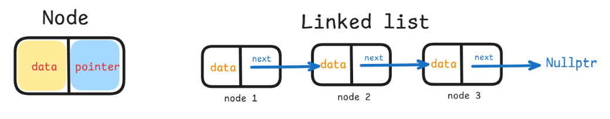
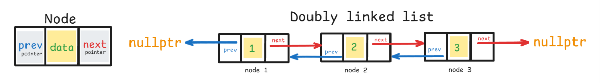
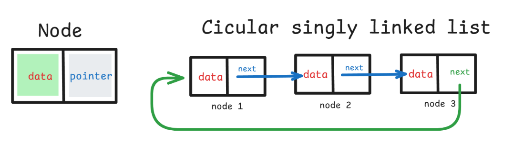
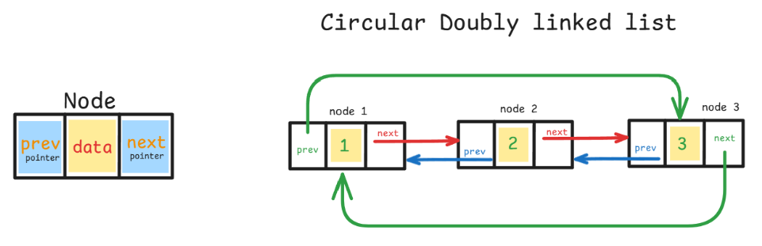

Linked lists
A linked list is a chain of nodes, each holding a value and a pointer to the next one. Nothing sits in contiguous memory — the pointers are what hold the sequence together.
Be comfortable with pointers, dereferencing and dynamic memory allocation before starting here — a linked list is really just those three ideas applied in a loop. The pointers & memory page covers what you need.
What is a linked list?
It's a linear structure built from individual nodes. Each node stores two things:
- a piece of data;
- a next pointer, holding the address of the following node.

One node: a value, plus the address of whatever comes next.
The last node's next points to nullptr, and that's what marks the end of the list. Unlike an array, the elements are scattered across memory — each one simply knows where to find the next.
Advantages and downsides
Every trade-off below comes from the same source: pointers instead of contiguous memory.
| Advantages | Downsides |
|---|---|
| Cheap insertion and deletion Rewire two pointers and you're done. |
No random access You can't jump straight to index i. |
| Grows and shrinks freely Size changes one node at a time, at runtime. |
Extra memory per node Every node pays for its next pointer. |
| No contiguous block needed Nodes fit wherever there's room. |
Slower traversal Scattered nodes defeat the CPU cache. |
| No shifting Inserting in the middle moves nothing. |
Reaching a position costs O(n) You must walk there from the head. |
Types of linked list
Singly linked
Each node holds data and one next pointer. Traversal runs in one direction only.

Doubly linked
Each node adds a prev pointer alongside next, so you can walk the list in both directions.

Circular
The last node points back to the first instead of to nullptr, closing the chain into a loop. This works on top of either of the two forms above.


Singly vs. doubly describes how many pointers each node carries. Circular vs. non-circular describes what the last node points at. The two axes are independent — you can have any combination.